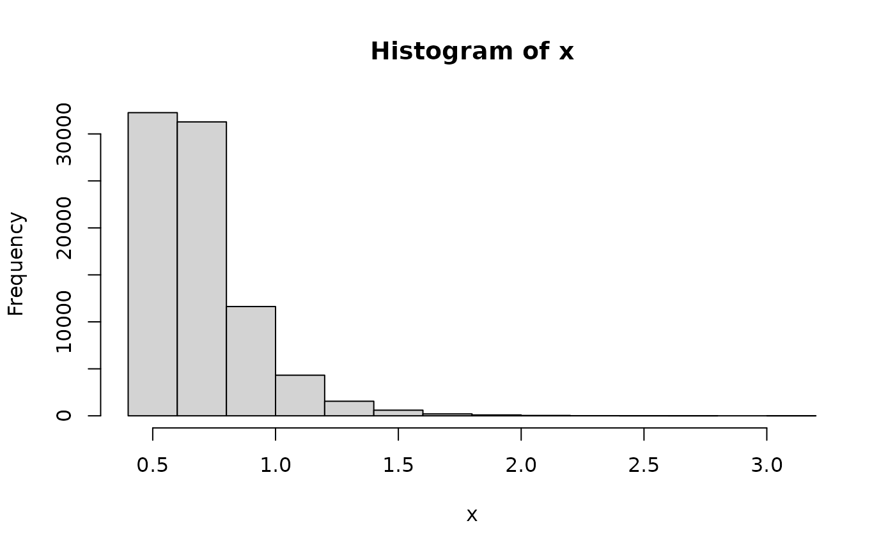
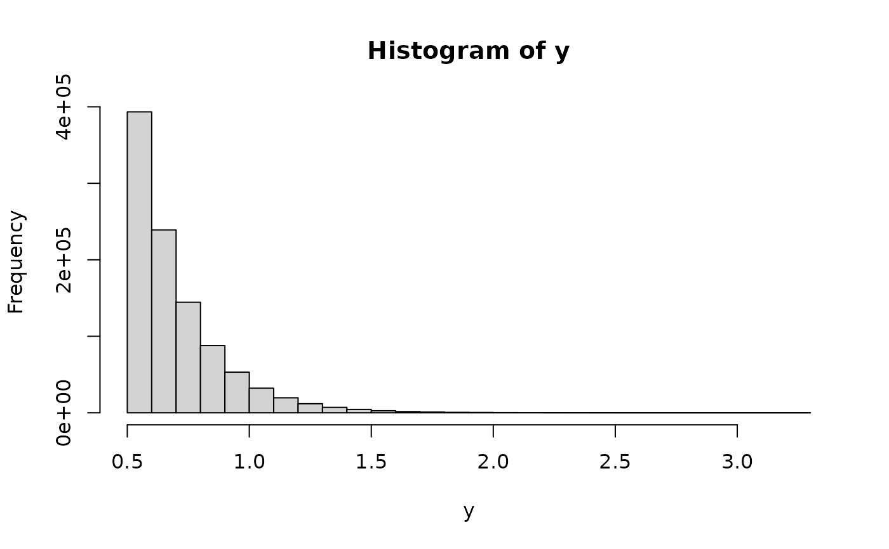
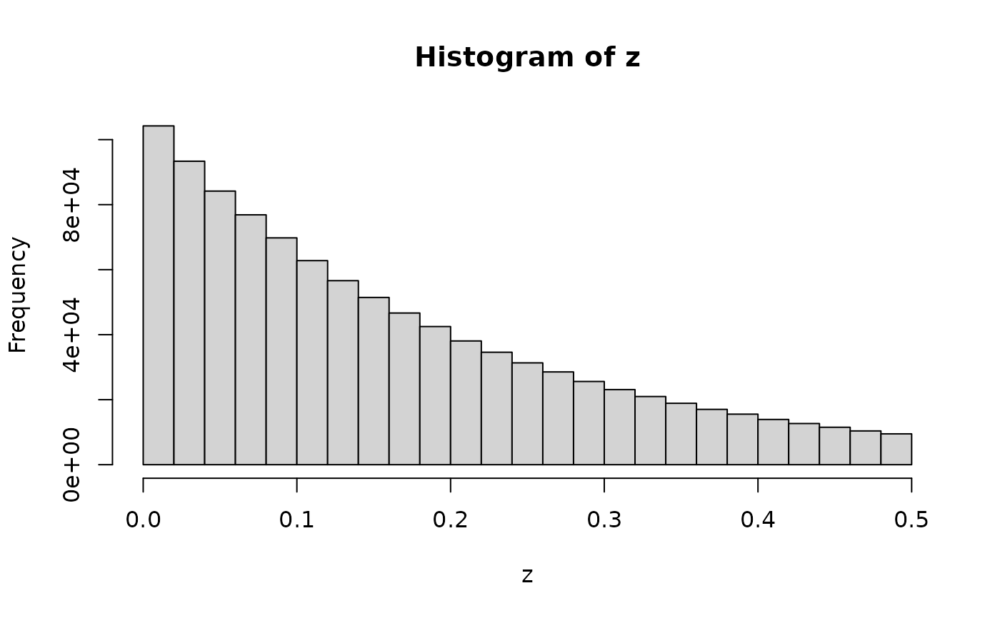

![[Stable]](figures/lifecycle-stable.svg)
This generates random numbers from a truncated Exponential distribution,
i.e. from X | X > l or X | X < r when X ~ Exp(rate). The advantage here is that
we guarantee to return exactly n numbers and without using a loop internally.
This can be derived from the quantile functions of the left- and right-truncated
Exponential distributions.
Usage
rtexp(n, rate, l = NULL, r = NULL)
Arguments
- n
(numeric)
Number of random numbers.
- rate
(numeric)
Non-negative rate.
- l
(numeric)
Positive left-hand truncation parameter.
- r
(numeric)
Positive right-hand truncation parameter.
Value
The random numbers. If neither l nor r are provided then the usual Exponential
distribution is used.
Examples
x <- stats::rexp(1e6, rate = 5)
x <- x[x > 0.5]
hist(x)

y <- rtexp(1e6, rate = 5, l = 0.5)
hist(y)

z <- rtexp(1e6, rate = 5, r = 0.5)
hist(z)
